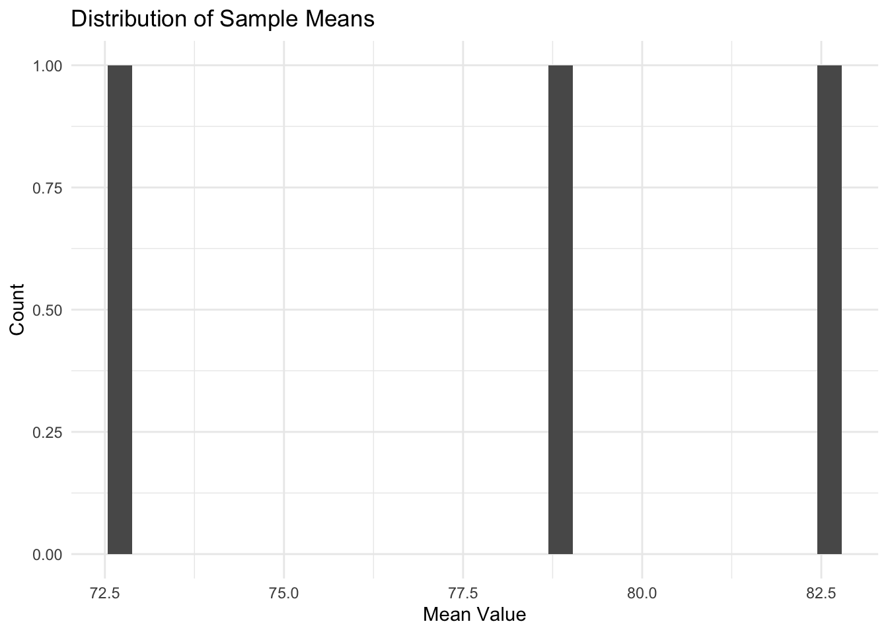

Working with Quarto
Using Quarto for Statistical Analysis
Now that we’ve seen how .R files help us save and organize our code, let’s explore how Quarto can make our analysis even better. When we write code in an .R file, we often find ourselves adding comments to explain what each part does. These comments help us remember our thinking and help others understand our code. But what if we could write proper explanations, include our code, and show the results all in one place?
This is exactly what Quarto lets us do. Think of it as a document where we can write explanations in normal text, include our R code in special sections called “chunks”, and show the output of that code (like tables and plots) right where we need it. This makes it much easier to explain our analysis to others - or even to ourselves when we come back to it later!
You can download the .R file, data file, and source .qmd file for this page here:
Converting our Sampling Exercise
Let’s take the sampling exercise we did in class and see how we can make it clearer using Quarto. We’ll take the same code from our .R file but now we can properly explain what each part does.
First, just like in our .R file, we need to load our tidyverse package. In Quarto, we put R code in special sections marked with three backticks and {r}. These are called “code chunks”:
Now we can input our sample data. Remember these are the measurements we took in class:
I’ve just shown three samples here to keep things clear, but you can add all of your samples just like we did in the .R file. If we ask R to output one of our samples, it will print out within the document:
sample_2 [1] 48.8 86.5 67.5 84.5 97.6 92.0 60.7 108.0 84.3 58.5If you are viewing the .qmd document itself (i.e. not the rendered version) try running these code blocks by pressing the ‘run’ button (looks like a triangular play button).
One nice thing about Quarto is that we can explain our thinking right alongside our code. For instance, we can explain that each sample contains 10 measurements, and we’re storing them in variables named sample_1, sample_2, etc.
Now let’s calculate the mean for each sample:
We can even show the results right in our text! For example, the mean of our first sample is 72.79 (this is printed by just putting {r} mean_1 inline) This is much nicer than having to print values separately - we can discuss the numbers right where they make sense in our explanation.
Next, let’s create our table of means just like we did in the .R file:
# A tibble: 3 × 1
mean_values
<dbl>
1 72.8
2 78.8
3 82.7See how Quarto automatically displays the table? In our .R file, we had to specifically print the table by typing sample_means on a line by itself. Here, Quarto shows us the output of our code automatically.
Finally, let’s create a histogram of our sample means:
ggplot(sample_means, mapping = aes(x = mean_values)) +
geom_histogram() +
theme_minimal() +
labs(
title = "Distribution of Sample Means",
x = "Mean Value",
y = "Count"
)
The plot appears right after the code that created it. This makes it easy to discuss what we see in the plot right afterwards.
Why Quarto Makes Life Easier
You might be wondering why we’d use Quarto instead of just writing comments in our .R file. Here are a few reasons:
Everything is in one place - your explanations, code, and the results all flow together naturally.
You can write proper explanations using text formatting - headings, bullet points, even links to other resources.
The output (like tables and plots) appears right where you need it, making it easier to refer to specific results.
When you share your analysis with others, they can see both your code AND your thinking.
Workflow in Quarto
Working in Quarto is very similar to working with .R files, but with some powerful extra features. Let’s look at how to work with a Quarto document:
Running Code
When you’re writing a Quarto document, you can:
- Click the “Run” button (play icon) at the top of any code chunk to run just that chunk
- Use the same keyboard shortcuts we learned for
.Rfiles - See the output right below each chunk as you go
Previewing and Rendering
One of the great things about Quarto is that you can create different types of documents from the same source. When you click “Render” at the top of the document, Quarto will create a final version that combines your code, text, and results.
By default, Quarto creates an HTML document that you can open in any web browser. This is great for sharing your analysis because anyone can view it, even if they don’t have R installed. The preview will appear right inside RStudio, making it easy to see how your final document will look.
You can also render to other formats like PDF or Word documents. This is really useful when you need to share your analysis in different ways - maybe your professor wants a PDF for an assignment, or your colleague prefers to read documents in Word.
To preview your document as you work:
- Click the “Render” button (or press Cmd/Ctrl + Shift + K)
- RStudio will show you a preview of your document
- The preview updates automatically when you render again
This makes it easy to build your document step by step and see exactly how it will look to others.
Hint: Just like with .R files, build your analysis step by step. Run each chunk as you write it to make sure it works before moving on. This makes it much easier to find and fix any problems!
This workflow lets you develop your analysis gradually, explaining each step as you go. It’s like having a lab notebook where you can record both what you did and why you did it.
In the next section, we’ll use these Quarto features to do a more complete analysis of some the AI Jobs data! We’ll look at salary data from the AI job market and see how we can use sampling to understand salary variations across different job roles. This will show you how the sampling concepts we’ve learned can help us answer interesting questions about real data.